![]()
tree <- flametree::flametree_grow(
seed = 100L,
time = 7L,
split = 3L,
trees = 1L
)
flametree::flametree_plot(
data = tree,
background = "white",
palette = "black",
style = "nativeflora"
)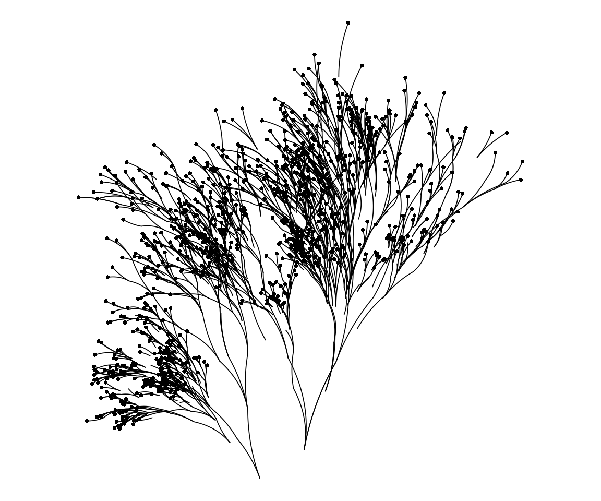
November 24, 2024
It has annoyed me for many years that I have used Bézier curves without really understanding them. Consider, for example, the flametree package I wrote when first learning how to make generative art.
tree <- flametree::flametree_grow(
seed = 100L,
time = 7L,
split = 3L,
trees = 1L
)
flametree::flametree_plot(
data = tree,
background = "white",
palette = "black",
style = "nativeflora"
)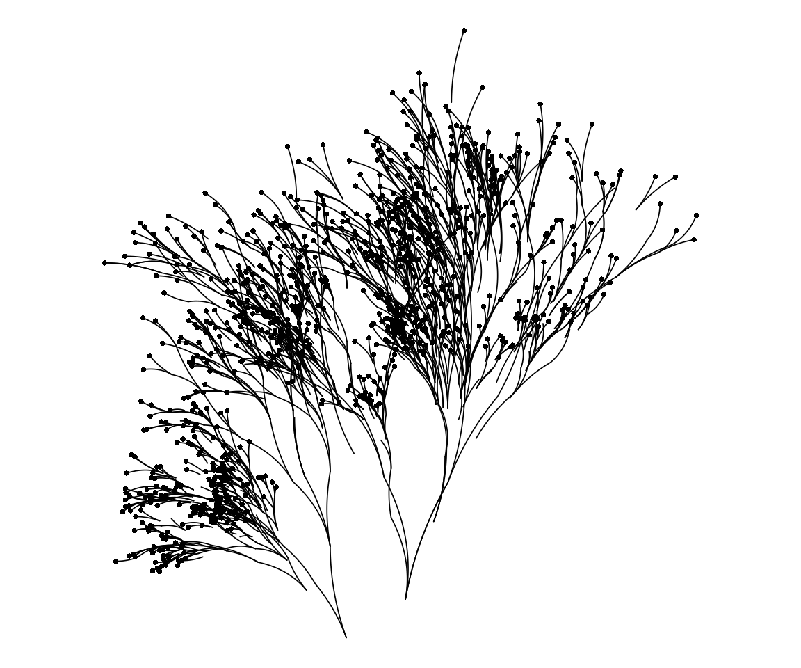
Setting aside the details of the system, you can see that the branching shapes here are constructed from many curved lines connected to one another. Each segment is a distinct Bézier curve. If I’d not used Bézier curves and instead constructed the art using straight lines, these pieces would lose any sense of flowing growth.
Or consider these images, all of which are outputs from something I hastily cobbled together this morning in a desperate effort to wake my brain from its weekend stupor:
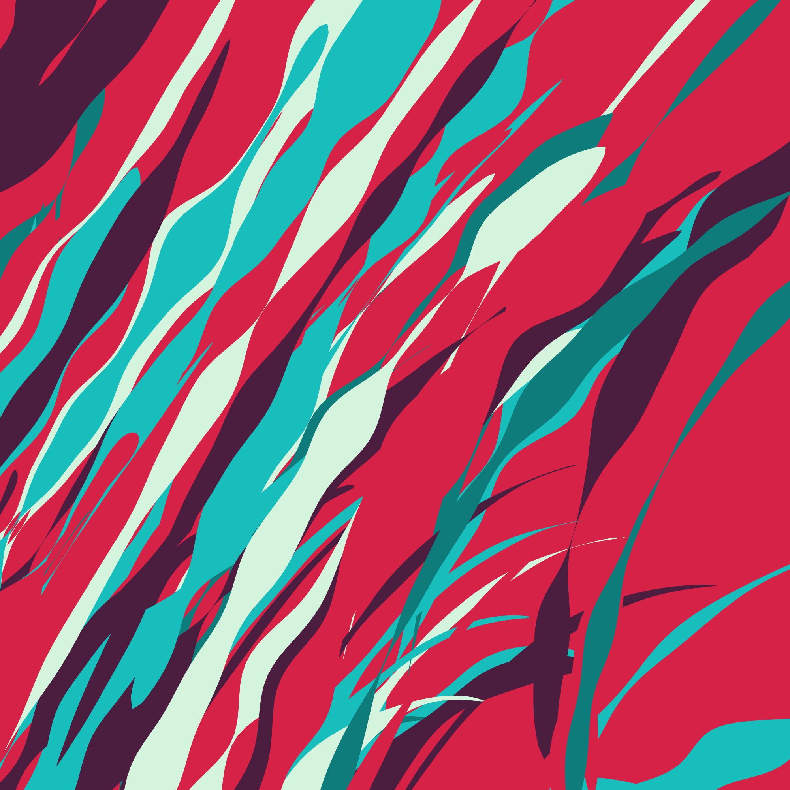
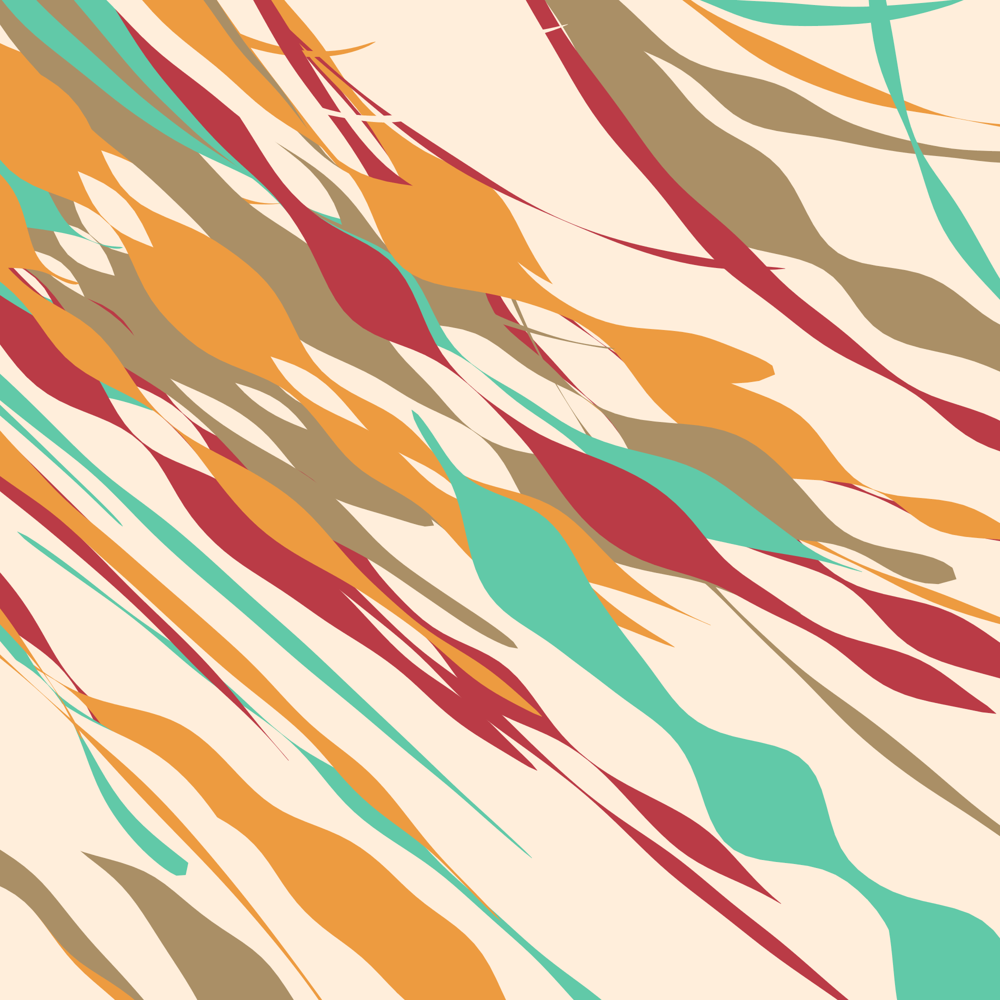
The influence of Bézier curves is more subtle in these pieces, because each image is comprised of many distinct “ribbon” shapes that are described by rules I talked about in the S7 post, and their individual character isn’t at all related to Bézier curves. But notice how, in all three pieces, there’s tendency for all the ribbons to “bend” in the same (or similar) direction? This happens because under the hood I’ve replaced the straight lines that were used in the original system with Bézier curves.
And let’s not even get started on all the point-and-click GUI interfaces out there that let you create Bézier curves without writing a single line of code. Bézier curves are everywhere.
Nevertheless, until today I’d never thought to look into the mathematics. For some reason – possibly because my idiot brain sometimes confuses Bézier functions with Bessel functions – I had this weird idea in my head that Bézier curves were complicated.
They are not.
Reduced to the bare essentials a Bézier curve is nothing special: it’s just a polynomial function. More precisely, it’s a special case of the Bernstein polynomials
\[ \begin{array}{rcl} B_n(t) &=& \sum_{v = 0}^n \beta_v \ b_{v,n}(t) \\ &=& \sum_{v = 0}^n \beta_v \ \frac{n!}{(n - v)!v!} \ t^v (1-t)^{n-v} \end{array} \]
where \(b_{v,n}(t)\) is referred to as the Bernstein basis polynomials of degree \(n\), \(\beta_v\) is the coefficient associated with each basis polynomial, and every data-minded person will immediately recognise that \(\frac{n!}{(n - v)!v!}\) is the [binomial coefficient](https://en.wikipedia.org/wiki/Binomial_coefficient.
None of this is very interesting.
But suppose we have a collection of \(n + 1\) control points \(P_0, \ldots, P_n\) that lie in a coordinate space. In a Bézier curve, these control points are analogous the \(\beta_v\) coefficients in a Bernstein polynomial, and (by definition) we restrict the domain of the function to the unit interval \(t \in [0, 1]\)
\[ B_n(t) = \sum_{v = 0}^n P_v \frac{n!}{(n - v)!v!} \ t^v (1-t)^{n-v} \] and we have the general form of the equation for a Bézier curve defined by these control points. A Bézier curve is a Bernstein polynomial.
This is still not very interesting.
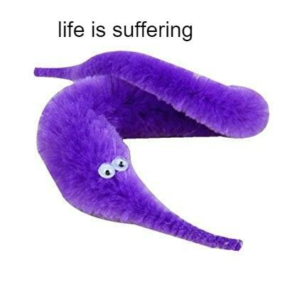
From a practical perspective there is no need to roll our own implementation of Bézier functions in R, because this has already been done many times before. Nevertheless – since the whole point of this post is to unpack how Bézier functions work – I’ll do so here for illustrative purposes. To that end, I’ll start by implementing my own bernstein() function:
Armed with a function that computes Bernstein polynomials, it’s very straightforward to construct Bézier curves and add them to plots. First, let’s load some packages:
Next, I’ll define a set of control points as a tibble that stores the x and y coordinates of the control points as separate columns:
I can now define a bezier curve by computing two bernstein() polynomials, one associated with the x-coordinates and the other associated with the y-coordinates:
Better yet, I can plot them:
ggplot() +
aes(x, y) +
geom_path(data = bezier) +
geom_point(data = control, color = "red") +
coord_equal(xlim = c(0, 10), ylim = c(0, 10)) +
theme_bw()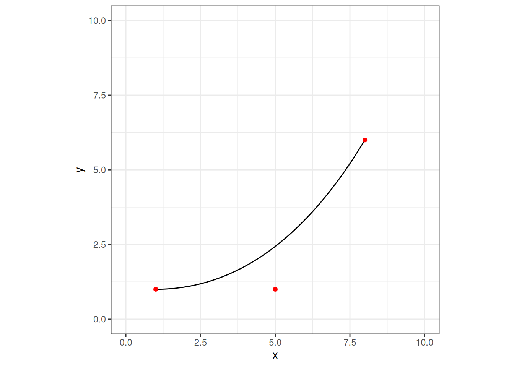
In this example there are only three control points, and if I’m honest I’ll admit that when I use Bézier curves in art I’ve only ever used curves with three control points, but there’s no principled reason for that restriction. Indeed, adding more control points can change the shape of the curve in interesting ways:
control <- tibble(
x = c(1, 5, 6, 7, 8),
y = c(1, 1, 9, 8, 6)
)
bezier <- tibble(
t = seq(0, 1, .01),
x = bernstein(control$x, t),
y = bernstein(control$y, t)
)
ggplot() +
aes(x, y) +
geom_path(data = bezier) +
geom_point(data = control, color = "red") +
coord_equal(xlim = c(0, 10), ylim = c(0, 10)) +
theme_bw()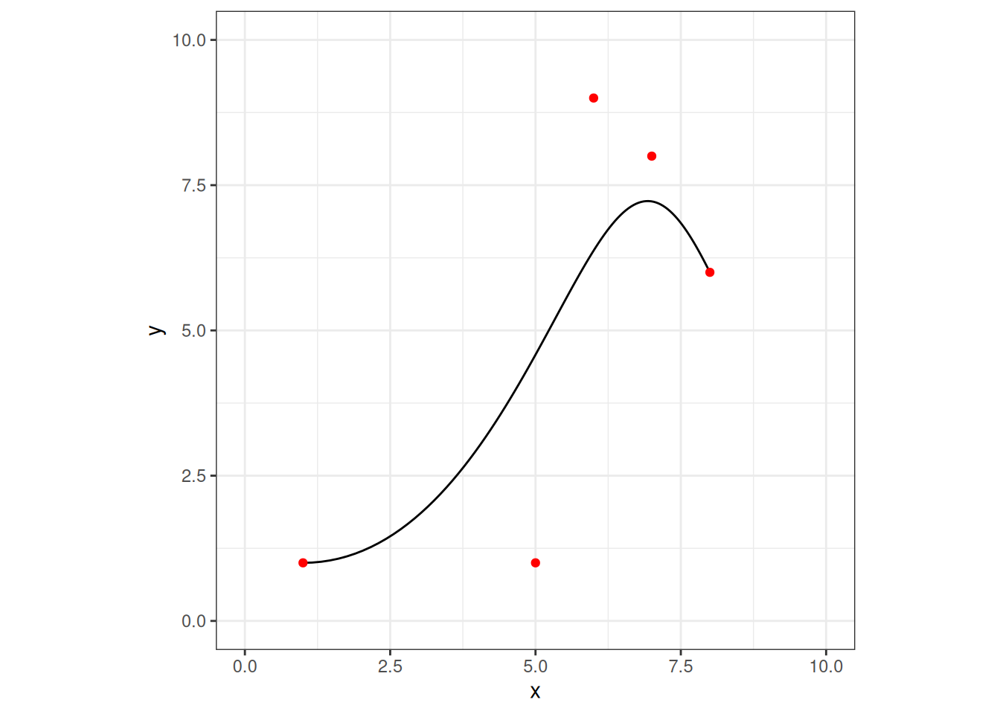
No, sorry, I lied. Still not interesting.
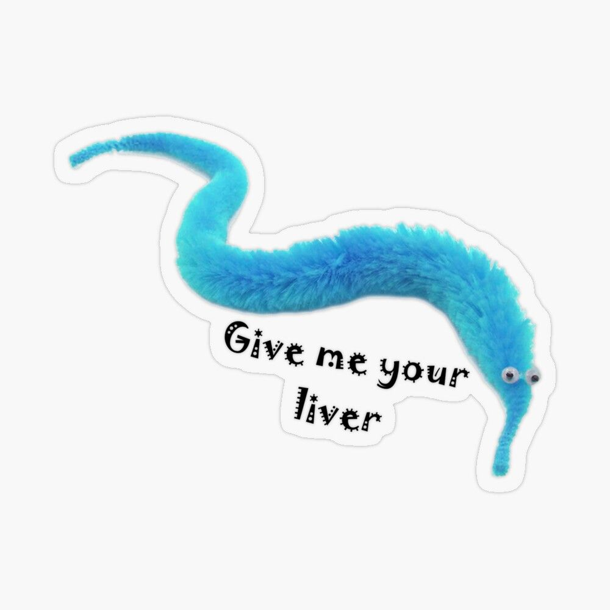
In order to play around with this a little further, and given that I mentioned the S7 post earlier, I’ll practice my S7 skills a little by defining a new “bezier” class:
library(S7)
bezier <- new_class(
name = "bezier",
parent = S7_object,
properties = list(
x = class_numeric,
y = class_numeric,
n = new_property(class = class_numeric, default = 100L),
curve = new_property(
class = class_data.frame,
getter = function(self) {
t <- seq(0, 1, length.out = self@n)
data.frame(
x = bernstein(self@x, t),
y = bernstein(self@y, t)
)
}
)
),
validator = function(self) {
if (length(self@x) != length(self@y)) return("x and y must have same length")
if (length(self@x) < 2) return("at least two control points are required")
if (length(self@n) != 1) return("n must be length 1")
if (self@n <= 0) return("n must be a non-negative number")
})I call bezier() by passing the x and y coordinates of the control points, like so:
The result is a data structure that stores points defining the Bézier curve as an internal data frame b@curve, and also keeps the control points as b@x and b@y. This is probably not a great class design, but whatever. In any case, here’s the object:
<bezier>
@ x : num [1:5] 1 5 6 7 8
@ y : num [1:5] 1 1 9 8 6
@ n : int 100
@ curve:'data.frame': 100 obs. of 2 variables:
.. $ x: num 1 1.16 1.32 1.47 1.62 ...
.. $ y: num 1 1 1.02 1.04 1.07 ...This data structure is not very interesting.
We can make this a little less tedious by noting that every S7 class is also an S3 class, which allows me to define an S3 plot method:
plot.bezier <- function(x, show_control = TRUE, ...) {
p <- ggplot() +
aes(x, y) +
geom_path(data = x@curve) +
coord_equal() +
theme_bw()
if (show_control) {
p <- p + geom_point(
data = data.frame(x = x@x, y = x@y),
color = "red"
)
}
p
}
plot(b)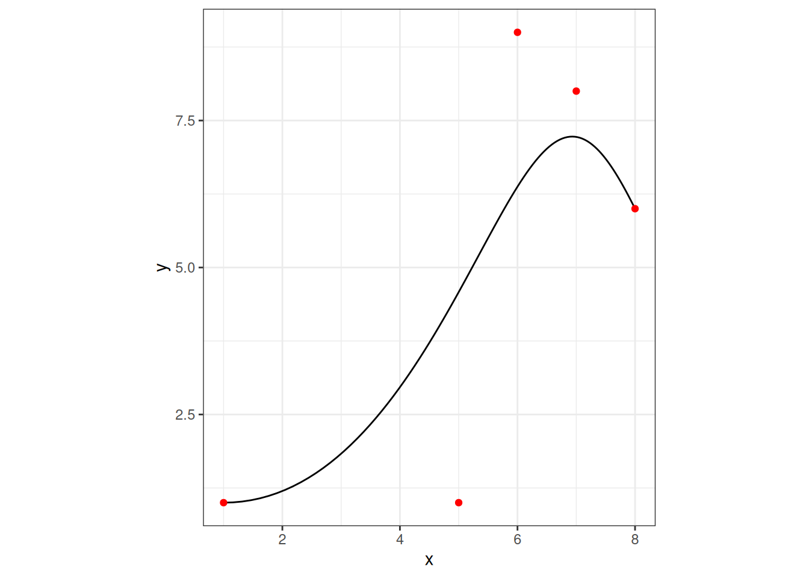
I guess that’s nice? Sort of?
Anyway, if we really wanted to we could push this a little further. For examples, we could define a “bezier_noise” class where objects are comprised of many Bézier curves, in which random noise is injected into some of the control points. I’ll spare you the terrible, horrible, no good, very bad code that I used to define this class. Instead I’ll just plot a whole bunch of Bézier curves atop one another:
bezier_noise <- new_class(
name = "bezier_noise",
parent = S7_object,
properties = list(
x = class_numeric,
y = class_numeric,
k = new_property(class = class_numeric, default = 100L),
n = new_property(class = class_numeric, default = 100L),
noise = new_property(class = class_numeric, default = 1),
seed = new_property(class = class_numeric, default = 1L),
bezier = new_property(
class = class_list,
getter = function(self) {
l <- list()
np <- length(self@x)
s <- seq(0, 2, length.out = np)
s <- s * (2 - s)
withr::with_seed(
self@seed,
{
for(i in 1:self@k) {
l[[i]] <- bezier(
x = self@x + rnorm(np, sd = self@noise) * s^2,
y = self@y + rnorm(np, sd = self@noise) * s^2,
n = self@n
)
}
}
)
l
}
)
),
validator = function(self) {
if (length(self@x) != length(self@y)) return("x and y must have same length")
if (length(self@x) < 2) return("at least two control points are required")
if (length(self@n) != 1) return("n must be length 1")
if (self@n <= 0) return("n must be a non-negative number")
if (length(self@k) != 1) return("k must be length 1")
if (self@k <= 1) return("k must be a positive number")
if (length(self@noise) != 1) return("noise must be length 1")
if (self@noise <= 0) return("noise must be a non-negative number")
if (length(self@seed) != 1) return("seed must be length 1")
if (self@seed <= 0) return("seed must be a non-negative number")
})
plot.bezier_noise <- function(x, palette = "bilbao", dots = TRUE, ...) {
p <- ggplot() + aes(x, y) + coord_equal() + theme_void()
pal <- scico::scico(x@k, palette = palette)
pal <- sample(pal)
if(dots) for(l in 1:x@k) p <- p +
geom_point(
data = data.frame(
x = x@bezier[[l]]@x,
y = x@bezier[[l]]@y
),
color = "grey80",
size = 1,
shape = 19
)
for(l in 1:x@k) p <- p +
geom_path(
data = x@bezier[[l]]@curve,
color = pal[l],
lineend = "round"
)
p
}
plot(
bezier_noise(
x = c(0, 10, 15, 20, 25, 30, 35),
y = c(0, 0, 5, 15, 5, 5, 5),
k = 200L,
noise = 1.5
),
palette = "lajolla",
dots = TRUE
)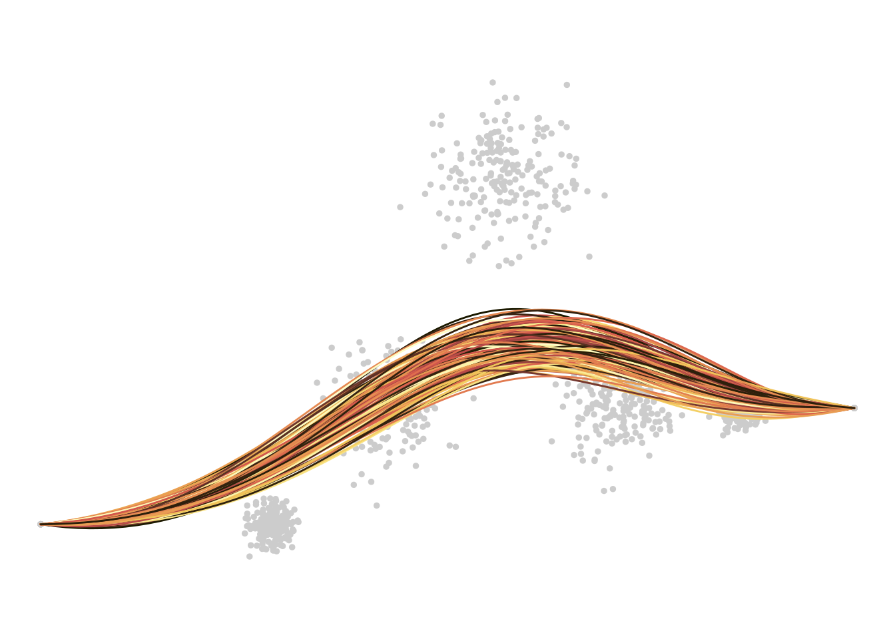
Okay? But why, Danielle? Why?
None of this may seem like a great life accomplishment yet, but this is only because you do not realise how close I am to writing an R package that generates worm on a string memes in ggplot2.
set.seed(1L)
plot(
bezier_noise(
x = sort(rnorm(10L)),
y = rnorm(10L),
k = 200L,
noise = .1
),
palette = "oslo",
dots = FALSE
) +
annotate(
"point",
x = c(.8, .85),
y = c(.7, .8),
size = 6,
shape = 19,
color = "white"
) +
annotate(
"point",
x = c(.8, .85),
y = c(.7, .8),
size = 6,
shape = 1,
color = "black"
) +
annotate(
"point",
x = c(.81, .86),
y = c(.7, .8),
size = 2,
shape = 19,
color = "black"
) +
annotate(
"label",
x = .5,
y = .3,
size = 8,
label = "🪱 i will subsett closurs"
) +
annotate(
"text",
x = .2,
y = .9,
angle = 70,
size = 10,
color = "pink",
label = "on purpse"
)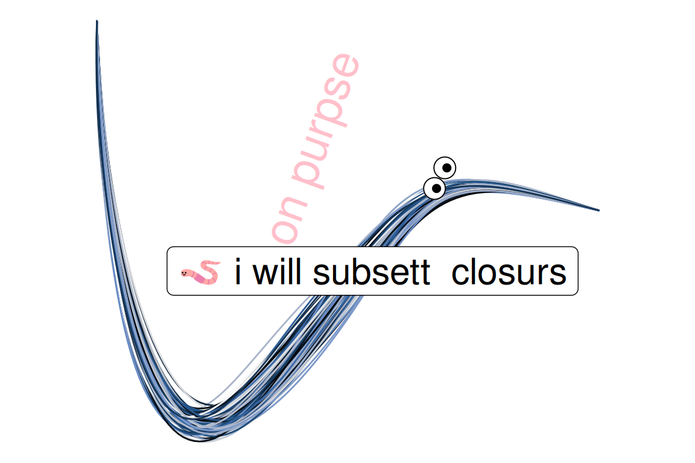
@online{navarro2024,
author = {Navarro, Danielle},
title = {{Bézier} Curve},
date = {2024-11-24},
url = {https://blog.djnavarro.net/posts/2024-11-24_bezier-curves/},
langid = {en}
}